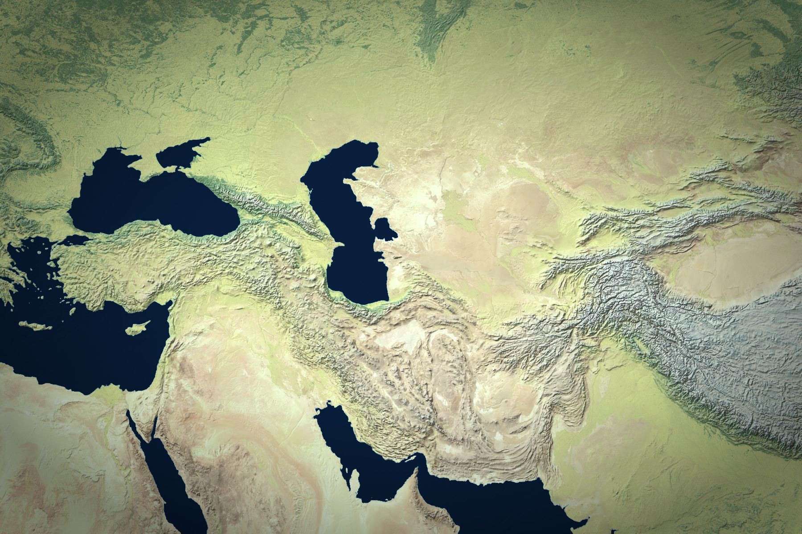

♜ SAMARQAND
Imperiya markazi
Imperiya markazi
MOVAROUNNAHR
ERON
HINDISTON
1390-yil
Imperiyaning kengayish davri.
Imperiyaning kengayish davri.
Yilni tanlang
👑
AMIR TEMUR (1336–1405)
XIV asrning yirik sarkardasi va davlat arbobi. 1370-yilda Movarounnahrda hokimiyatni qo‘lga olib, Samarqandni davlat markaziga aylantirdi.
Janglar va muhim voqealar
Eslatma: fon xaritasi badiiy tasvir. Hududlar va yurish yo‘nalishlari sxematik, aniq tarixiy GIS chegaralari emas. Tarixiy aniqlik uchun voqealar ishonchli manbalar bilan tekshirilishi lozim.